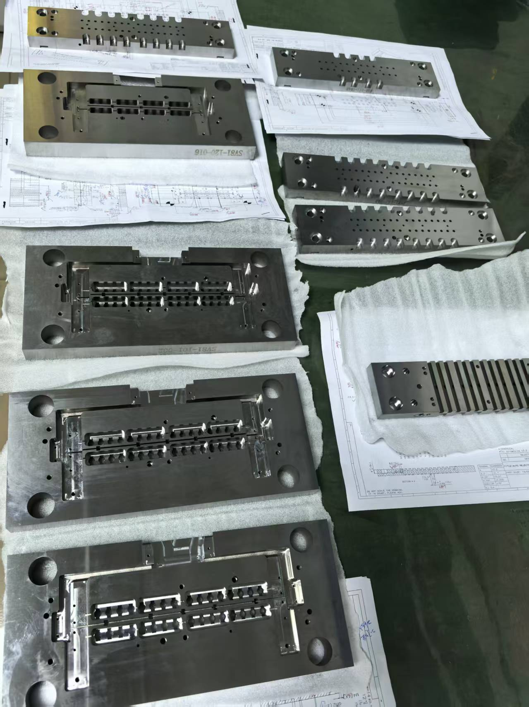

Technical Blog
Ceramic Parts for Precision Manufacturing
A practical guide for purchasing managers, mechanical engineers and quality engineers evaluating ceramic parts for precision manufacturing for precision manufacturing projects.

Overview
Ceramic parts are used in precision manufacturing when a component needs insulation, wear resistance, hardness, chemical stability or low thermal conductivity. They are common in electronics tooling, fixtures, locating components, guide parts and special manufacturing equipment. Unlike metals, ceramics can provide electrical insulation and wear behavior that is useful in high-precision production environments.
Process Principles
One common application is the precision ceramic pin. In electronics manufacturing, pins or locating elements may need to position small parts without conducting electricity or wearing too quickly. A ceramic pin can support stable positioning while reducing electrical risk. The design must consider edge condition, contact area, strength and assembly method, because ceramic materials can be brittle if loaded improperly.
Application Fit
Ceramics are also used in fixtures and tooling where metal contamination or electrical conductivity is a concern. For example, a component may contact a sensitive electronic part during assembly or testing. A ceramic locating surface can provide insulation and wear resistance. Buyers should describe the working environment, contact force and mating material so the supplier can assess feasibility.
Material Considerations
Material selection is important. Jinyi lists ceramic materials such as ZKA-901, NPZ-28 and NPZ-1. Different ceramic materials have different strength, wear and machining behavior. A buyer should not assume all ceramics behave the same. The drawing and application should identify whether insulation, wear resistance, surface finish, dimensional stability or cost is the primary requirement.
Tolerance Review
Machining ceramics requires different thinking from machining steel or carbide. Ceramics are hard and may chip at edges if the design is too sharp or unsupported. Edge treatment, chamfer, corner radius and handling must be considered. Precision grinding and careful inspection are often needed. If a drawing includes very thin walls or sharp corners, the supplier should review breakage risk before quotation.
RFQ Guidance
Tolerance depends on ceramic material, part geometry and machining method. Buyers should mark critical dimensions and functional surfaces clearly. If only one surface is critical, that should be stated. If the part is a locating pin, diameter, straightness, end shape and contact region may be important. If it is a plate or insulator, flatness, hole position and edge condition may matter more.
Quality Control
Surface finish can affect function. A ceramic surface that contacts another part may need a controlled finish to reduce wear or avoid scratching. A surface used for insulation may have different requirements. Drawings should include roughness values when necessary, but buyers should also explain the application so the supplier can recommend a practical process.
Cost and Lead Time
Ceramic parts may be more expensive and slower to produce than metal parts, especially in small quantities or complex shapes. However, they can solve problems that metals cannot solve. For international buyers, the best approach is to discuss the function early. A supplier can often suggest small design changes that reduce machining risk and improve yield without changing the part's purpose.
Supplier Selection
Inspection for ceramic parts can include dimensional checks by projector, microscope, height gauge or other measuring equipment. Because ceramic components are often used in precision positioning, the inspection datum should be clear. If the drawing is incomplete, the supplier may quote with assumptions that later cause disagreement. A complete RFQ reduces this risk.
Conclusion
In summary, ceramic parts are valuable in precision manufacturing because they offer insulation, wear resistance and stable positioning potential. They require careful material selection, edge design, tolerance review and handling. Buyers should provide PDF drawings, STEP or STP models, material preferences, quantity and application details so the supplier can evaluate manufacturability and quote accurately.
Need Help With a Precision Component?
If you are evaluating ceramic parts for precision manufacturing for a real project, send drawings, material, quantity and tolerance requirements to Jinyi Precision. Our team can review wire EDM, PG grinding, tungsten carbide, ceramic and precision mold component requirements for international buyers.
RFQ Request
Send drawings for review
Please include material, quantity, tolerance, surface requirement and target delivery date in the form. Please send PDF, STEP, STP, DWG or DXF drawings by Email or WhatsApp after submitting the RFQ form.